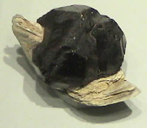
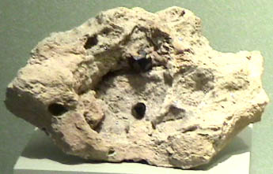
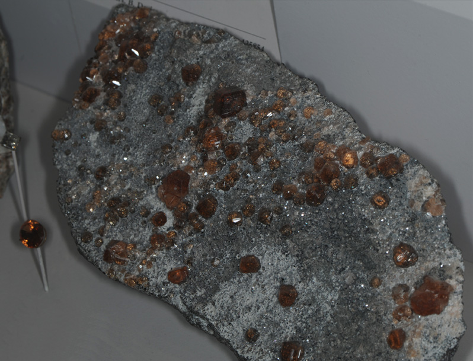
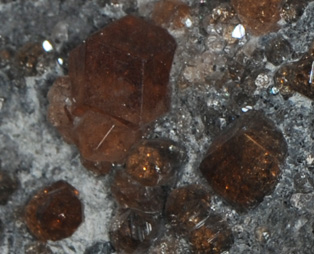
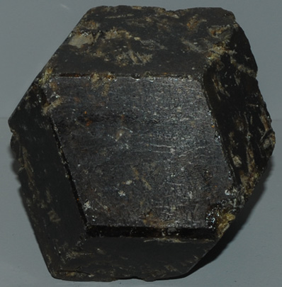
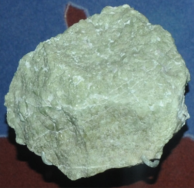
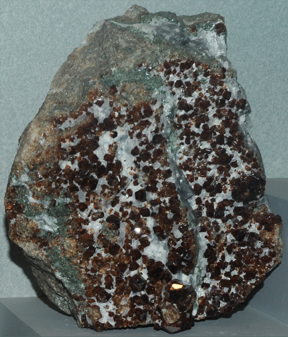
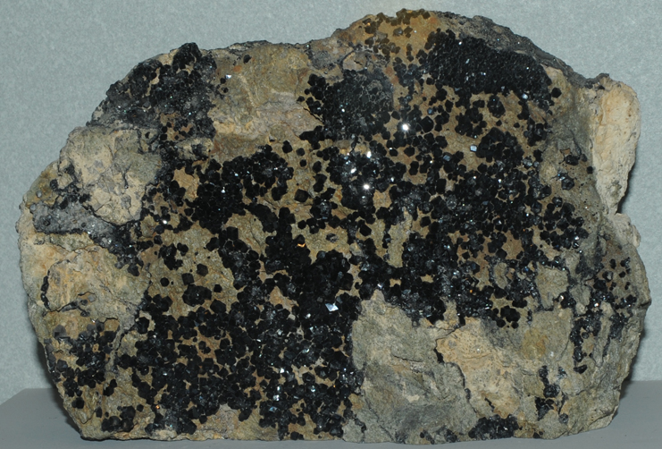
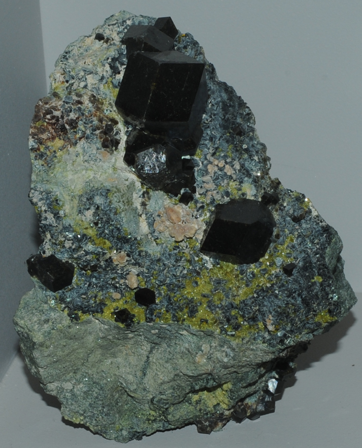
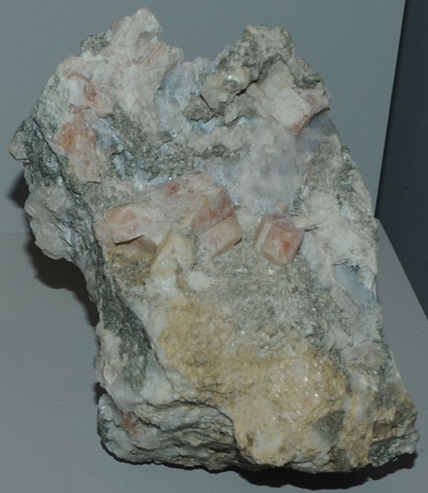

Spessartine
|

|
Spessartine is silicate of manganese and aluminum with the composition Mn3Al2(SiO4)3. This sample is about 3x3 cm and is from Gilgit, Northern Areas, Pakistan. These samples are displayed in the Smithsonian Museum of Natural History.
|
|
Another example of the habits of formation of spessartine crystals comes from Garnet Hill, White Pine County, Nevada. The sample size is about 9x7 cm.
|

|
Grossular

Ca3Al2(SiO4)3
Grossular is silicate of calcium and aluminum with the composition Ca3Al2(SiO4)3. These grossular crystals are from Asbestos, Quebec, Canada. The sample above is about 20 cm across. |  |
|

This grossular sample is about 6x6 cm and is from Sandave, Nioro du Sahel, Mali.
|
This grossular sample is part of the mineral collection from the cretaceous period around Crestmore, California. It is about 8 cm across.
|
|

|
This grossular sample is about 10x14 cm and is from La Calera, Cordoba, Argentina.
|
Mindat: Grossular
Andradite
Ca3Fe2(SiO4)3

Andradite is silicate of calcium and iron with the composition Ca3Fe2(SiO4)3. This sample is about 10x7 cm and is from San Benito County, California.

This sample is described as andradite with clinochlore and epidote. It is about 6x9 cm and is from Marquakhel, Spinnatigga, Parchines, Pakistan.
Mindat: Andradite
Anorthite

| CaAl2Si2O8
Anorthite is a silicate silicate of calcium and aluminum with the composition CaAl2Si2O8. This sample is about 8x11 cm and is from Monzoni, Val di Fassa, Trentino-Alto Adige, Italy.
|
Mindat: Anorthite
|
Index |